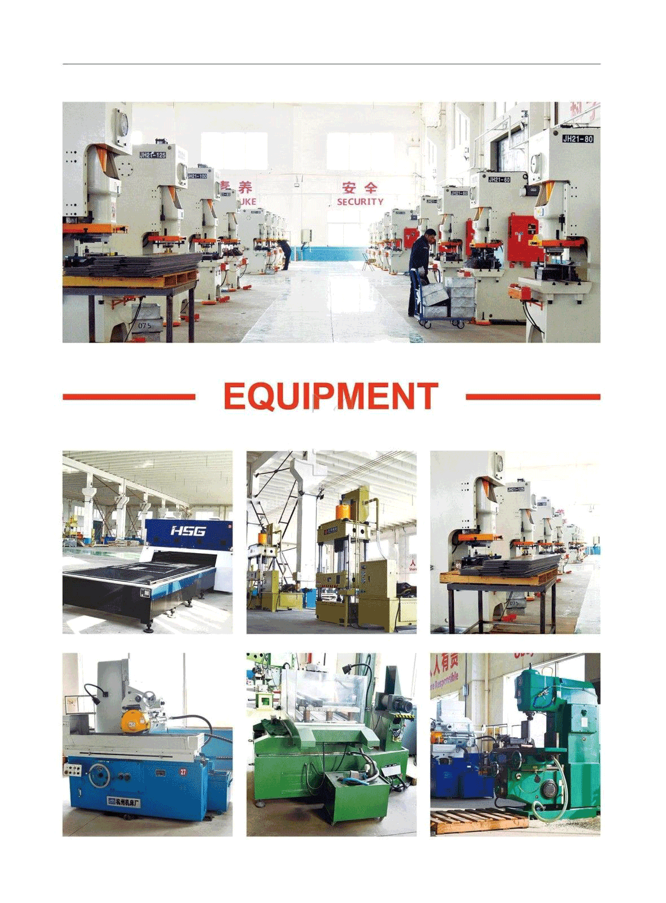
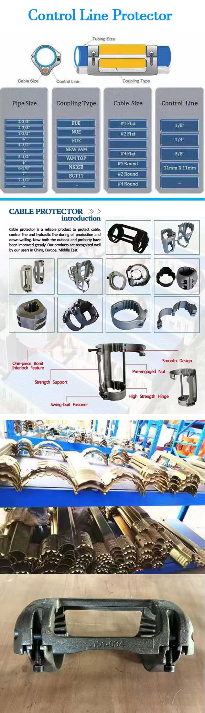
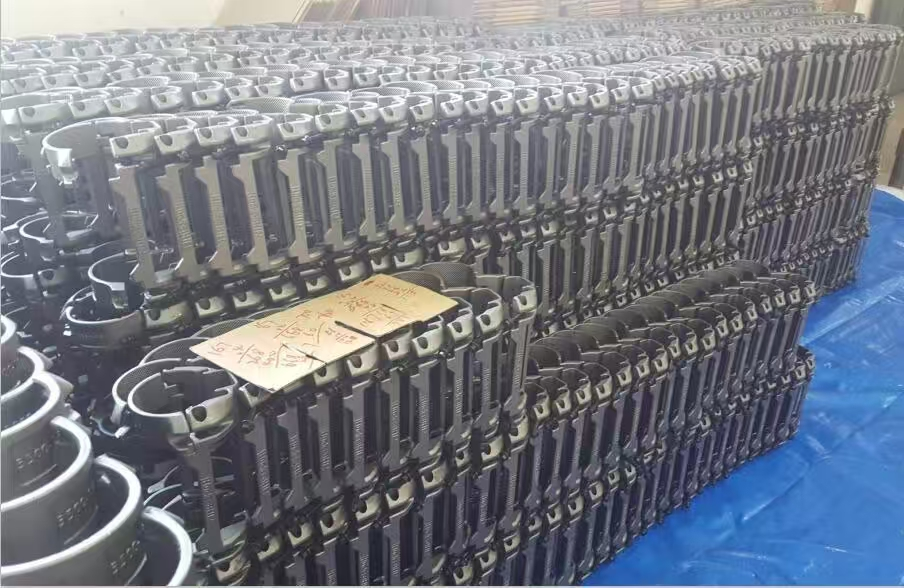
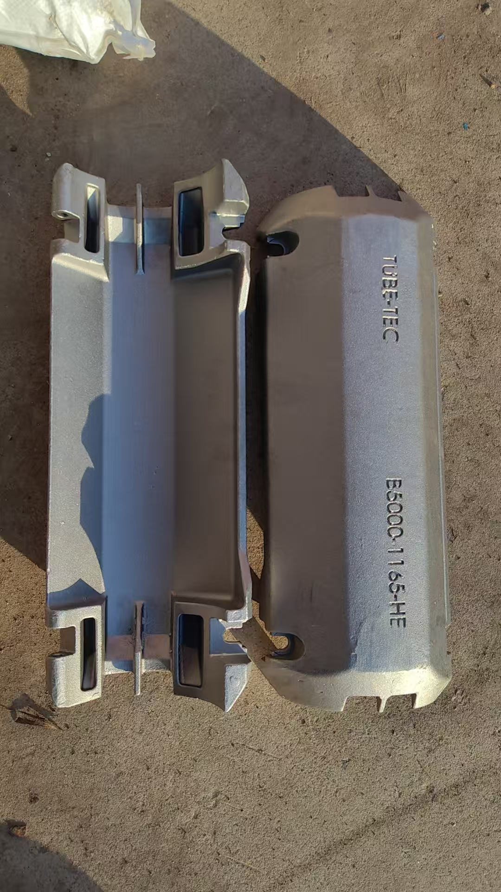
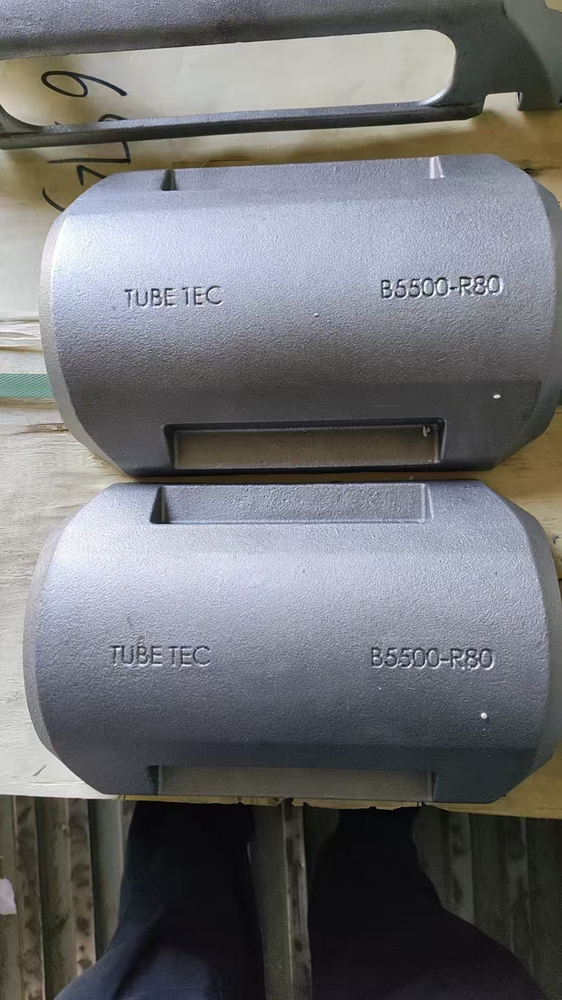
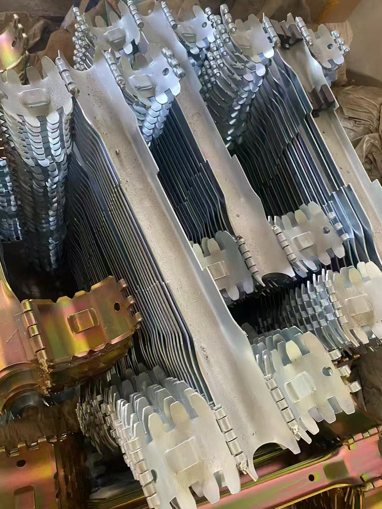
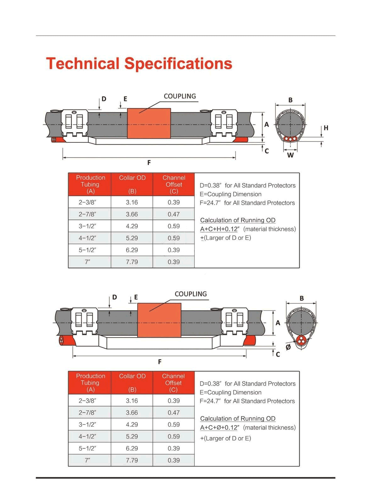
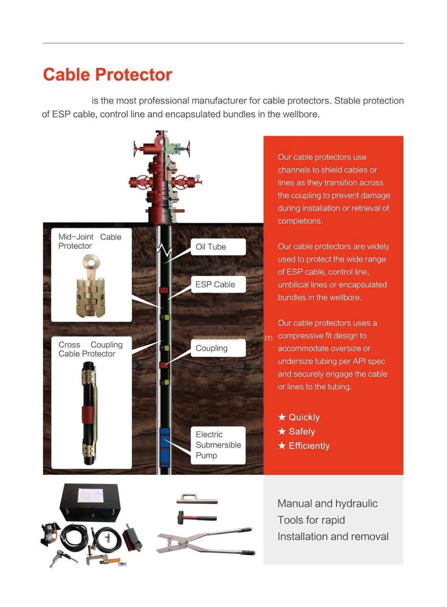

Arrow Machinery Equipment Co Ltd
Oil equipment factory and can help you source any product in China
Am Frank Chen! Welcome to inquire!
HOME
About US
Cable Protector
ESP Cable Portector
Control Line Protector
Stamped Cable Protector
Cross Coupling Protector
Torque Ring
sucker rod
CERTIFICATE
CONTACT US
frank0121@foxmail.com
saleoiltools@gmail.com







